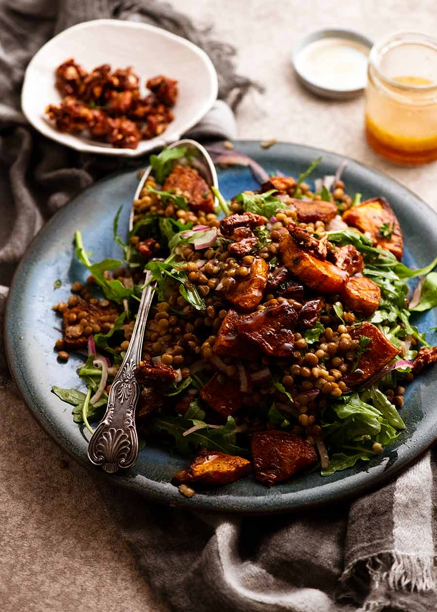

Honey Cinnamon Pumpkin Lentil Salad

Description
This salad is both healthy and yummy!
Make this ahead of time to wow your guests. Just be sure to add the dressing when serving and not before.
Indgredients
CINNAMON PUMPKIN
- 400g Pumpkin or Butternut squash
- 2tbsp extra virgin olive oil
- 1 tsp cinnamon
- 1/2 tsp allspice
- 1/4 tsp salt
SALAD
- 800g / 28oz canned lentils
- 2 cups rocket / spinach
- 1/2 red onion
- 3tsp fresh thyme leaves
HONEY WALNUTS (OPTIONAL)
- 3/4 cup walnuts
- 1 1/2 tbsp honey
- 1/4 tsp cinnamon
- Pinch of salt
DRESSING>
- 2tbsp red wine vinegar
- 2 tbsp honey
- 4 tbsp extra virgin olive oil
Instructions
PAN ROASTED SPICED PUMPKIN
- Toss Pumpkin with 1 tbsp olive oil, cinnamon, all spice and salt.
- Pan Roast Heat a large non stick skillet with 1tbsp olive oil over medium heat. Add about half the pumpkin, spreading into one layer. Cook for about 3 minutes each side. Then repeat for the other side